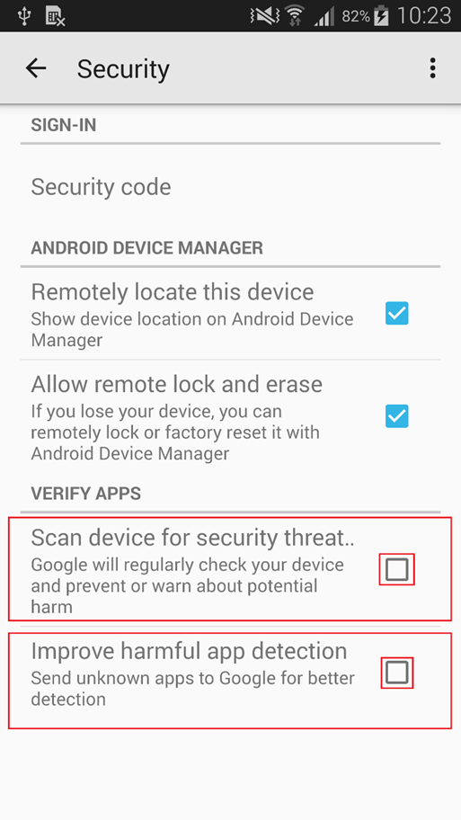

Configurar Ajustes de Seguridad (Android OS 4.x)
1.Asegúrese que Buscar amenazas de seguridad (“Scan device for security threat”) no esté marcado.
2.Asegúrese que Mejorar detección aplicaciones(“Improve harmful app detection”) no esté marcado.
3.Pulse la tecla de retorno en el dispositivo

Si todo lo antes mencionado se cumple por favor vaya a
Paso 13